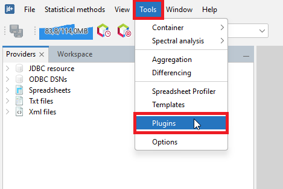
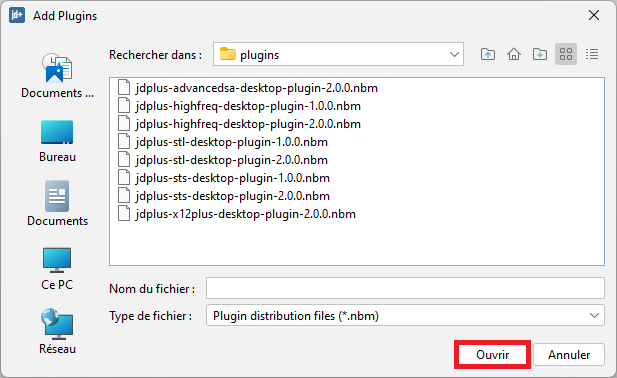
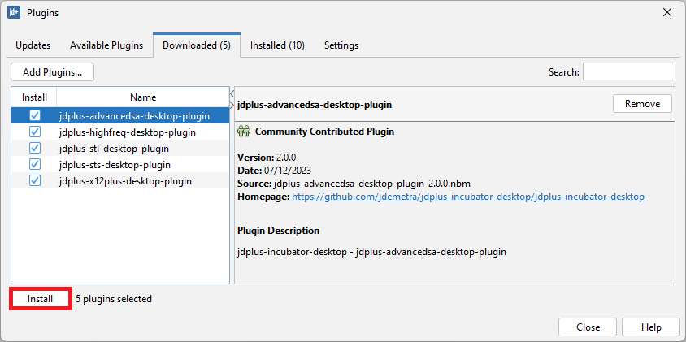
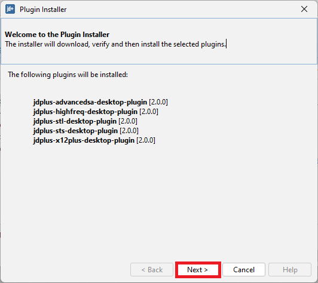
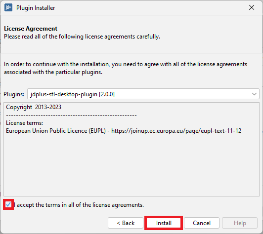

Plug-ins for JDemetra+
JDemetra+ is an application that supports plug-ins, which are components adding specific features to the existing software.
Main functions
Default Plugins
| Name | Category | Description |
|---|---|---|
| NbDemetra – Anomaly detection | SA core algorithms | Identification of outliers |
| NbDemetra – Spreadsheet | IO (Input/output) | Time series providers for spreadsheet (Excel, OpenOffice) |
| NbDemetra – Common | IO (Input/output) | Common time series providers, like XML and TXT |
| NbDemetra – JDBC | IO (Input/output) | Time series provider for the JDBC sources |
| NbDemetra – ODBC | IO (Input/output) | Time series provider for the ODBC sources |
| NbDemetra – SDMX | IO (Input/output) | Time series provider for SDMX files |
| NbDemetra – Core | SA core algorithms | Encapsulation of the core algorithms |
| NbDemetra – UI | SA core algorithms | Basic graphical components |
| NbDemetra – Branding | SA core algorithms | |
| NbDemetra – SA | SA core algorithms | Default SA framework, including TRAMO-SEATS and X-13ARIMA-SEATS. This implementation can lead to small differences in comparison with the original programs. |
This list is displayed in the Installed panel. This panel is available from the Plugin functionality and it is activated from the Tools menu (Figure Activation of the Plugin functionality from the Tools menu in Plugins section).

Plugins-list
Bundesbank plug-ins
ConCur: The plug-in ConCur supports the controlled current adjustment approach. It supports the storage of the current components and offers graphical tools to compare forecasted and re-estimated figures. Furthermore, a pre-defined summary of the output containing the most important quality measures can be exported to HTML files.
KIX: The plug-in KIX (German for chain-linked index) has been designed to facilitate the handling of this index type. It offers addition and subtraction of two or more chain-linked time series as well as the computation of contributions of growth.
KIX2.0: KIX 2.0 offers addition and subtraction of two or more chain-linked time series as well as the computation of contributions of growth following the concept of annual overlap. Contributions to growth are calculated with the partial contribution to growth approach.
KIXE: KIX_E offers addition and subtraction of two or more chain-linked time series as well as the computation of contributions of growth following the concept of one-period overlap. Contributions to growth are calculated with the aid of the Ribe (1999) contribution to growth approach.
KIX: The program KIX-CC offers for continuously chain-linked indices the aggregation or disaggregation of two or more indices, or the calculation of contributions to growth.
TransReg: The plug-in TransReg allows the user to carry out grouping and centring of user-defined regression variables in JD+.
Xlsx2Ws: The plug-in Xlsx2Ws allows the converting of specific workspace information to a xlsx file and vice versa.
National Bank of Belgium plug-ins
AccessThis JDemetra+ extension is a pure java library for reading time series from MS Access databases. It currently supports versions 2000-2016 read/write and 97 read-only.Being a pure Java library, you don’t need MS Access installed in order to read Access files. (edit versions info here)
SDMX: This plugin provides time series from SDMX to JDemetra+ by querying web services or parsing files.
SA Advanced: This module provides some experimental seasonal adjustment methods (with RegArima preprocessing), basic structural models, generalized airline models and airline + seasonal noise models (called mixed airline).
- gairline: generalized airline model
- mairline: mixed airline model
- mixedfreq: mixed frequencies seasonal adjustment
- sssts: Seasonal specific structural time series
- sts: Structural time series
Benchmarking: This module provides some experimental methods for temporal disaggregation and multi-variate benchmarking:
Chow-Lin, Fernandez, Litterman, Cholette, Calendarization.Nowcasting: Nowcasting is often defined as the prediction of the present, the very near future and the very recent past. The plug-in developed at the National Bank of Belgium helps to operationalize the process of nowcasting. It can be used to specify and estimate dynamic factor models and visualize how the real-time dataflow updates expectations, as for instance in Banbura and Modugno (2010). The software can also be used to perform pseudo out-of-sample forecasting evaluations that consider the calendar of data releases, contributing to the formalization of the nowcasting problem originally proposed by Giannone, et al. (2008) or Evans (2005).
Installation procedure
Installation from GUI
menu>tools> plug-ins
The Plugins window includes five panels: Updates, Available plugins, Downloaded, Installed and Settings, some of them however are not operational in the current version of the software.
- The Updates panel offers the user the option to manually check if some updates of the already installed plugins are available. This functionality, however, is currently not operational for the JDemetra+ plugins.
- The Available plugins panel allows the downloading of all plugins that are related to JDemetra+. This functionality, however, is currently not operational for the JDemetra+ plugins.
- The Downloaded panel is designed for the installation of new plugins from a local machine. This process in explained in more detail below.
- The Settings panel is designated for adding update centres, which are the locations that hold plugins. For each centre the user can specify proxy settings and a time interval to automatically check for any updates. At the moment this functionality is not operational for the JDemetra+ plugins.
Installation of the new plugins from the local machine can be done from the Plugin functionality activated from the Tools menu.
Installation of the new plugins from the local machine can be done from the Plugin functionality activated from the Tools menu.

Activation of the Plugin functionality from the Tools menu
To start the process, go to the Downloaded panel and click on the Add Plugins… option. Next the user should select the plugins from the folder in which the plugins have been saved and click the OK button.
``

The Downloaded panel – the choice of available plugins
The new plugin is now visible in the panel.

A downloaded plugin
Click on it and choose the Install button.

Starting an installation procedure
There is a wizard that allows the user to install the marked plugin(s). In the first step choose Next to continue or Cancel to terminate the process.

Installation wizard window
Next, mark the terms of agreements and choose Install.

Initiating installation process
Then the process is started.

Installation in progress
After a while JDemetra+ will provide an update in the installation process. Click Finish to close the window.

Installation completed
Once the process is finished, the newly installed plugin is automatically integrated within the software. The picture below compares the view of the Workspace window before (on the left) and after (on the right) the installation of the NbDemetra-ODBC plugin.

The impact of the plugin on the interface
The list of all installed plugins is displayed in the fourth panel. To modify the current settings mark the plugin (by clicking the checkbox in the Select column) and chose an action.
The following options are available:
Activate – activates the marked plugin if it is currently inactive. The option is available for inactive plugins (see the picture below);
Deactivate – deactivates the marked plugin if it is currently active. The option is available for active plugins (see the picture below);
Uninstall – uninstalls the marked plugin.
Inactive plugins can be activated or uninstalled.

Active plugins can be deactivated or uninstalled

List of plugins – deactivation
There is a wizard that allows the user to activate/deactivate/uninstall the marked plugin(s). The example below illustrates the deactivation process. In the first step the user is expected to confirm or cancel the deactivation.

Plugin’s deactivation process
In the second step the user should decide if the software will be restarted immediately after the uninstallation is completed or not.

The final step of the installation procedure
It is possible to delay the restart of the application, although the restart is necessary to complete the process.